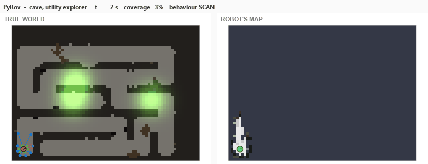
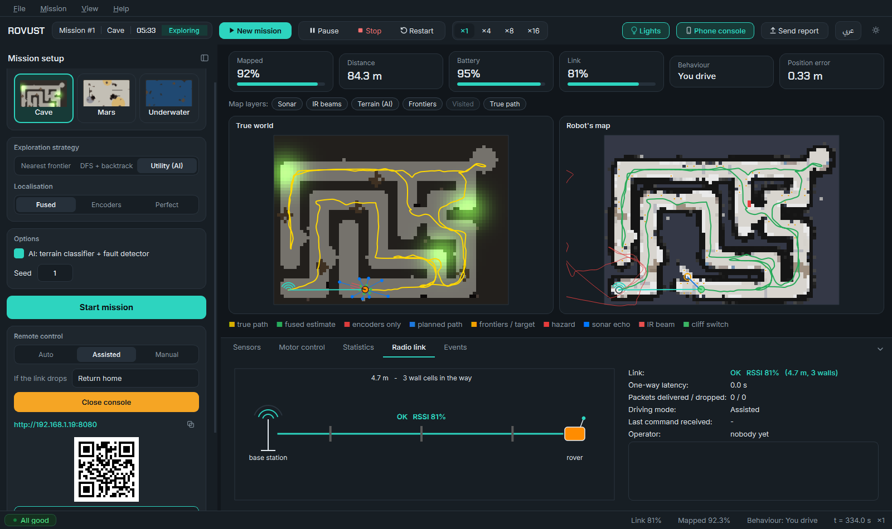
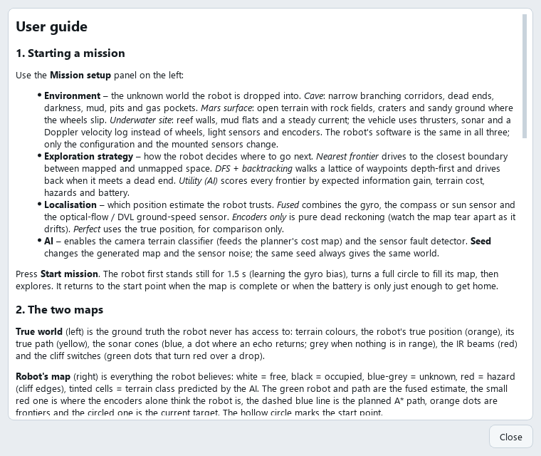
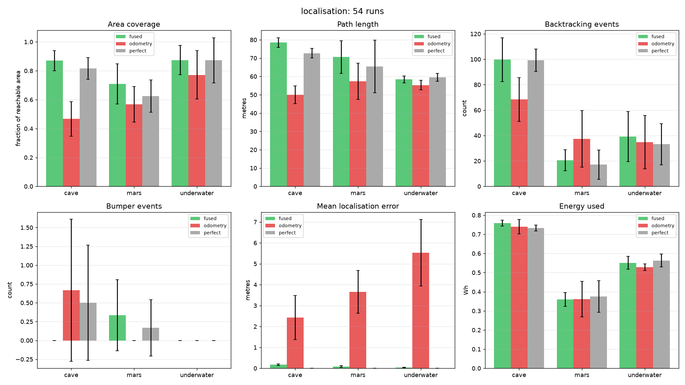

PyRov — دليل الفريق الكامل
1. الفكرة في دقيقة
بننزّل روبوت في مكان ما يعرفوش — من غير خريطة ومن غير GPS — ولازم: يتحرك بأمان، يتفادى الجدران والحفر، يبني خريطة، يقرر هو يروح فين، ويرجع البيت قبل ما البطارية تخلص. ده بالظبط وضع روفر على المريخ أو روبوت في منجم منهار.
اللي يفرّق المشروع إن الروبوت مبني من تحت لفوق زي الحقيقي: موتورات DC بـ PWM، encoders، PID، سنسورز بفيزياء حقيقية وعيوبها، وبعدها الخريطة والقرار. ونفس الكود بيشتغل في 3 بيئات مختلفة تمامًا — اللي بيتغير هو ملف الإعدادات بس (sim/config.py).

2. رحلة المهمة من أول ما تدوس Start
المهمة بتنتهي بواحدة من 4: returned رجع البيت، fell وقع في حفرة (ممكن بس في Manual)، battery_dead البطارية خلصت، stopped انت وقفتها. في كل الحالات بتظهر لافتة بالسبب وبتقدر تبعت تقرير.
3. طبقات الروبوت (من تحت لفوق)
كل طبقة بتعتمد على اللي تحتها، وكل طبقة مربوطة بمحاضرة:
4. الموتورات والتحكم (محاضرات Actuators وControl)
الموتور (sim/robot/motor.py)
المتحكم مش بيشوف غير duty cycle من −1 لـ +1. الإشارة بتختار اتجاه الـ H-bridge (SW1+SW2 لقدام، SW3+SW4 لورا)، والقيمة بتتحول لجهد فعّال غير خطي: فيه منطقة ميتة تحت 6% (الاحتكاك الساكن)، ومنحنى أسّي، وسرعة الاستقرار بتقل مع الحمل (رمل، طين). عشان كده لازم calibration table زي ما المحاضرة قالت — calibration_table() بتطلعها.
الـ Encoder (encoder.py)
على عمود الموتور قبل الـ gearbox (16 tick × 30 = 480 tick للفة العجلة). سرعة العجلة المقاسة = فرق الـ ticks في الخطوة — قيمة مقطّعة (quantised)، ودي الحاجة الوحيدة اللي الـ PID بيشوفها.
التحكم (control.py, drive.py)
اتنفذت كل الصيغ اللي في المحاضرة: on-off، on-off بـ hysteresis، وPID بالصيغة التزايدية المنفصلة:
R_n = R_{n-1} + Kp(e_n − e_{n−1}) + Ki(e_n + e_{n−1})/2 + Kd(e_n − 2e_{n−1} + e_{n−2})
وفوقهم الـ driving straight بتاع المحاضرة (شكل 5.16): I-controller بيجمع فرق المسافة بين الـ encoders ويرجّعه للعجلتين. الانزلاق بيتطبق بعد الموتور فالـ encoders ما بتشوفوش — ده السبب الفيزيائي إن الـ dead reckoning بيتوه.

5. السنسورز — كل واحد مكانه وسببه (محاضرات Sensors 1 & 2)
كل سنسور شايل تصنيفه زي المحاضرة (local/global · internal/external · active/passive · binary/analog/digital)، والتناظري منهم بيعدي على ADC 10-bit، وأي واحد ممكن تبوّظه وقت الشغل (stuck / dead / noisy) من جدول Sensors. اضغط على فلتر:
| السنسور | التصنيف | مكانه | ليه هنا بالذات | البيئة |
|---|---|---|---|---|
| Sonar ring 8× (12× تحت المية) | activeexternaldigital | حوالين الجسم على ارتفاع الـ bumper، S0 لقدام | سنسور الخريطة الأساسي. مخروط 15°، فقد الصدى لما الزاوية تبقى مائلة (الجدار يبان أبعد — زي المحاضرة)، تداخل بين الجيران، وضوضاء بتزيد مع المسافة. | كلها |
| IR PSD 3× لقدام | activeexternalanalog | قدام، موزعين على عرض الجسم، مغمورين 6 سم | أي حاجة الجسم هيخبط فيها بتقع في شعاع. الخرج V=24/(d+4) غير خطي → lookup table بالمعايرة؛ تحت 6 سم المنحنى بيرجع لورا فالسنسور مغمور عشان مفيش حاجة تقرب أكتر (نص المحاضرة). | كهف، مريخ |
| Cliff switches 6× | activeexternalbinary | زوج قدام، زوج على الجنبين، زوج ورا — بيبصوا لتحت | السنسور الأفقي ما بيشوفش حفرة. الزوج الخلفي موجود لأن كل مناورات الهروب بترجع لورا، والجانبي لأن الجسم بيحتك بالحفرة وهو بيلف. نقص زوج منهم كلّفنا روبوت في الاختبار. | كهف، مريخ |
| Bumpers 2× | passiveexternalbinary | شريط قدام، نص يمين ونص شمال | خط الدفاع الأخير. الزوج بيقول نلف ناحية إيه (المحاضرة). اللمس من الجنب (تيار بيزق الروبوت على جدار) ما بيضغطش bumper أمامي. | كلها |
| Encoders 2× | passiveinternaldigital | على عمود الموتور | feedback للسرعة + dead reckoning. | كلها |
| Compass | passiveinternaldigital 1° | فوق في النص بعيد عن الموتورات | اتجاه مطلق بيحد انحراف الـ gyro. في الكهف فيه اضطراب مغناطيسي محلي (حديد في الصخر). مش مركّب على المريخ — مفيش مجال مغناطيسي نافع. | كهف، تحت المية |
| Sun sensor | passiveexternaldigital | فوق | اللي روفرات المريخ الحقيقية بتستخدمه للاتجاه المطلق — بديل الـ compass. | المريخ |
| Gyro (yaw) | passiveinternaldigital | مركز الكتلة | فيه bias ثابت: 0.006 rad/s لوحدها = 20° في الدقيقة. عشان كده بيتعلم الـ bias وهو واقف أول 1.5 ث والـ compass بيصحّحه. | كلها |
| Accelerometer | passiveinternaldigital | مركز الكتلة | ميل الأرض من متجه الجاذبية، مع فلتر لأن العجلة بتتلخبط مع الميل في عينة واحدة (المحاضرة: الـ inclinometer بيتأخر). سلوك SLOPE بيرفض ميل أكتر من 11°. | كلها |
| Camera | passiveexternaldigital | قدام، مايلة 15° لتحت | بتشوف 16×16 بكسل من الأرض اللي قدام الروبوت → مدخل مصنّف التربة. الضلمة بتزود الضوضاء والكشافات بتسحب 4 W. | كلها |
| Optical flow (كهف/مريخ) / DVL (تحت المية) | activeexternaldigital | تحت الجسم بيبص على الأرض | بيقيس حركة الأرض الحقيقية تحت الروبوت — ما بيشوفش انزلاق العجل (رمل المريخ 25%)، وتحت المية هو مصدر الـ odometry الوحيد (الـ thrusters ما بتلمسش الأرض). | كلها |
| Battery monitor | passiveinternalanalog | داخلي عبر مقسم جهد | بيدخل في قرار الرجوع للبيت. | كلها |
| Light sensor + كشافات | passiveexternalanalog | قدام | ضلمة → كشافات → طاقة أكتر → مهمة أقصر. | الكهف |
| Gas sensor | passiveexternalanalog بتأخر | فوق | جيوب الغاز بتبقى مناطق تكلفتها عالية في الـ planner (مش جدران). | الكهف |
| Pressure | passiveexternalanalog | الجسم | العمق. | تحت المية |
6. فين أنا؟ — تحديد الموقع (sim/estimation.py)
بنحتفظ بـ 3 تقديرات جنب بعض وبنرسمهم على الخريطة:
- Encoders only (أحمر) — dead reckoning زي المحاضرة بالظبط: بيجمع حركة العجل. بيتوه مع الوقت (انزلاق + انحراف اتجاه).
- Fused (أخضر) — المسافة من الـ optical flow/DVL، والاتجاه من الـ gyro المصحّح بالـ compass/sun (complementary filter). بيفضل في حدود سنتيمترات.
- Perfect (للمقارنة بس) — المكان الحقيقي.
جرّب في البرنامج: اختار Localisation → Encoders only في الكهف وشوف الخريطة بتتشقق والجدران بتتكرر، وبعدين نفس الـ seed بـ Fused.
7. الخريطة (sim/mapping.py)
Occupancy grid بخلايا 20 سم، كل خلية فيها log(p/(1−p)) إنها مسدودة. صدى الـ sonar بيفضّي الخلايا على طول الشعاع ويزوّد الخلية اللي ورا نقطة الصدى (الصدى من السطح، الجدار وراه). الخلية محتاجة صدايين عشان تبقى "مسدودة" فأي spike واحد ما بيعملش جدار. و"مفيش صدى" ما بيعلّمش حاجة — غالبًا انعكاس ضايع مش فراغ. فوقها طبقتين: تربة (من الـ AI) ومخاطر (حفر).

8. السلوك — Subsumption (sim/behaviors.py)
زي محاضرة Robot Behaviour: طبقات بأولوية، الطبقة الأعلى بتاخد التحكم من اللي تحتها ("subsume"). كل خطوة تحكم (20 مرة/ثانية) كل طبقة بتقول هي عايزة تمسك ولا لأ:
| # | الطبقة | إمتى | بتعمل إيه |
|---|---|---|---|
| 9 | STOP | وقع في حفرة / بطارية فاضية / انت وقفتها | مفيش حركة، المهمة انتهت |
| 8 | ESCAPE | bumper اتلمس | يرجع لورا 0.7 ث (أو يلف لو فيه حفرة ورا)، يلف بعيد عن الجنب اللي خبط، ويشطب الهدف |
| 7 | CLIFF | cliff switch شاف حافة | يبعد عن الحافة ويعلّم الخطر على الخريطة |
| 6 | SLOPE | ميل أكتر من 11° | يرجع لورا |
| 5 | SCAN | بداية المهمة | 1.5 ث واقف ثم لفة كاملة |
| 4 | AVOID | sonar/IR قريب (32 سم قدام، 14 سم قطري) | يلف للجنب الأفضى — on-off بـ hysteresis (يفصل بس لما الطريق يفضى بوضوح) ولو اتزنق 3 ثواني يرجع لورا |
| 3 | TELEOP | انت بتسوق (assisted/manual) | آخر أمر وصل بالراديو؛ watchdog يوقّفه بعد ثانية من غير أوامر |
| 2 | HOME | الطاقة بالكاد كفاية للرجوع (×1.6 أمان) أو الخريطة كملت | A* لنقطة البداية |
| 1 | EXPLORE | فيه هدف | يتبع مسار الـ A* (pure pursuit) |
| 0 | WANDER | مفيش حاجة تانية | مشية عشوائية (Monte Carlo walk بتاع المحاضرة) |
في وضع Manual الطبقات 4–8 متعطّلة عمدًا — عشان تبيّن للدكتورة هي كانت بتعمل إيه (وعشان كده ممكن تقع في حفرة فيه).
9. الاستكشاف والتخطيط (sim/planning.py)
Cost map: الخلايا المسدودة والمخاطر بتتضخّم بنصف قطر الروبوت (configuration space)، +1.5 جنب الجدران عشان المسار يفضل في النص، المجهول بـ 8× (مسموح بس بتجنّبه)، × تكلفة التربة من الـ AI. A* 8-connected من غير قطع زوايا.
Nearest frontier
الـ frontier = خلية حرة ملاصقة لمجهول. بيروح لأقرب مجموعة وبيلتزم بيها (غير كده بيتردد بين اتنين قريبين).
DFS + backtracking
نقاط كل متر؛ يجرب قدام، شمال، يمين، ورا؛ طريق مسدود = يرجع للنقطة اللي قبلها (ده الـ backtracking event اللي بنعدّه).
Utility (AI)
لكل frontier: gain / (cost + 1) − hazard − battery. المعلومات المتوقعة ÷ المسافة الموزونة بالتربة. كسب في كل البيئات.
10. الذكاء الاصطناعي (sim/ai/) — بصراحة
مفيش موديل خارجي ولا LLM. ثلاث حاجات كلها بتتعلم/تتحسب على الجهاز:
- مصنّف التربة — Random Forest (scikit-learn): ده الـ machine learning الحقيقي. من صورة الكاميرا 16×16 بنستخرج 26 رقم (متوسط، تباين، حواف، تموّجات بالـ FFT، ارتباط البكسلات، شقوق غامقة، histogram) وندرّب 120 شجرة قرار على 3500 صورة اصطناعية علشان يقول: ground / sand / rock / mud / bedrock / water / pit. بيتدرّب على جهازك أول تشغيل (ثواني) ويتحفظ في
sim/ai/terrain_rf.pkl. دقته ~86%، وناتجه بيدخل في cost map الـ A* فعلًا — الروبوت بيتجنب الرمل والطين. - كاشف الأعطال: إحصائي (مش موديل): نافذة 60 قراءة لكل سنسور — ثابتة وهو بيتحرك (stuck)، على أقصى المدى والجيران شايفين حاجة (dead)، تذبذب أكبر بكتير من المقرر (noisy) → السنسور يتشال من الحسابات ويظهر FAULTY.
- Utility explorer: دالة تقييم (القسم اللي فات).
11. البيئات الثلاث (sim/config.py, sim/world.py)
التوليد: متاهة DFS على شبكة، ممرات عرضها 6 خلايا (1.2 م)، غرف، جدران مخرّمة، طين، حفر ملاصقة للجدران، 3 جيوب غاز بعيدة عن البداية. الخاص بيه: ضلمة (الكشافات شغالة)، sonar مداه 2.5 م بس، compass مضطرب، راديو بيموت بعد الثلث الأخير. مناسب لـ: DFS + backtracking (ممرات وطرق مسدودة).
التوليد: أرض مفتوحة، حقول صخور، فوهات بحوافها (pit + rim + ميل 0.25 rad)، رمل (انزلاق 25%)، bedrock، حواجز. الخاص بيه: مفيش compass → sun sensor، optical flow لأن الـ encoders بتكدب في الرمل، راديو قوي بس بتأخير ثانيتين (relay). مناسب لـ: frontier/utility في المناطق المفتوحة.
التوليد: شعاب بـ cellular automata، طين، تيار ثابت (0.04, −0.02) م/ث + ضوضاء. الخاص بيه: thrusters بدل عجل، 12 sonar مداهم 6 م (مفيش IR — الضوء ضعيف)، DVL للسرعة، pressure للعمق، مودم صوتي قصير المدى بتأخير 0.4 ث. بيبيّن: السنسورز بتتبدل حسب البيئة والكود واحد.
12. البرنامج (sim/qtui/)
برنامج ديسكتوب (PySide6/Qt) بوضع فاتح وداكن (View → Dark mode أو Ctrl+D)، بيفتح maximized، وفيه دليل مستخدم كامل (Help → User guide, F1).





الزراير والاختصارات
| فين | إيه | بيعمل إيه |
|---|---|---|
| Toolbar | New / Pause / Stop / Restart | مهمة جديدة · إيقاف مؤقت (Space) · إنهاء المهمة مع الاحتفاظ بالبيانات · إعادة (R) |
| Toolbar | Speed ×1 ×4 ×8 ×16 | سرعة المحاكاة (مش الروبوت) — مفاتيح 1-4 |
| Toolbar | Headlights (H) | كشافات — بتسحب بطارية وبتحسّن الكاميرا في الكهف |
| Toolbar | Send report (Ctrl+S) | تقرير المهمة الحالية → reports/ → Drive |
| Sensors tab | ok / stuck / dead / noisy | تبويظ أي سنسور وقت الشغل بضغطة؛ عمود Health بيبيّن لو الـ AI شاله |
| الخريطتين | ضغطة | نافذة كبيرة حيّة |
| Remote control | Autonomous / Assisted / Manual | مين يسوق (القسم اللي بعده) |
13. التحكم من الموبايل والوصلة اللاسلكية (sim/comms.py, sim/teleop/)
البرنامج بيفتح سيرفر صغير على الـ WiFi (زرار Open console for phone / tablet) ويديك عنوان زي http://192.168.1.4:8080 تفتحه من متصفح الموبايل على نفس الشبكة. الصفحة فيها joystick جواه حلقة الـ sonar (بتبقى برتقالي وأحمر ناحية الحاجات القريبة فبتسوق بالإحساس)، الكاميرا، الخريطة، الإشارة، البطارية، وأزرار الأوضاع. على الموبايل بتفتح مضغوطة (joystick + 3 أرقام + أزرار) وزرار More يفتح الباقي.


الوصلة اللاسلكية — ليه مهمة
كل أمر قيادة بيعدي بـ راديو محاكى من محطة أرضية عند نقطة البداية: الإشارة بتضعف مع المسافة ومع كل خلية جدار في خط النظر (كهف: صخر، تحت المية: مودم صوتي + 0.4 ث تأخير، مريخ: relay + ثانيتين). ضعيفة = نص الأوامر بتضيع. مقطوعة = ولا أمر بيوصل، وبعد 3 ثواني الروبوت بيتصرف حسب اختيارك: يرجع البيت (الافتراضي — بيرجع لمدى الإشارة بنفسه) / يستكشف لوحده / يستنى. ده بالظبط الحجة اللي في الـ proposal: ليه الروبوت لازم يبقى autonomous.
Assisted: انت بتوجّه بس طبقات الأمان شغالة (الروبوت يرفض الجدار والحفرة). Manual: مفيش حاجة توقفك. الاستجابة زي عجلة العربية: تربيعية، سقف دوران 1 rad/s، وبتقل وانت ماشي بسرعة. الكيبورد (الأسهم/WASD) بيشتغل بأي لغة لأنه بيقرأ مكان الزرار الفيزيائي.
14. التقارير وفولدر Drive (sim/report.py)
لما المهمة تخلص (أو تدوس Send report) بيتعمل فولدر reports/Mission #n - 2026-10-26 14-05 - cave (اسم الجهاز)/ فيه report.html (كل الإحصائيات + صورتي الخريطتين + الفريق)، صور PNG، وmetrics.json، وسطر في missions.csv.
وبيترفع لفولدر Drive الموحد بتاع الفريق عن طريق Google Apps Script صغير في حساب صاحب الفولدر (بوّابة): البرنامج يبعت الملفات → السكريبت يشوف آخر رقم Mission في الفولدر ويدي الجديد n+1 → يرجّع الاسم → النسخة المحلية تتسمّى زيه. لو مفيش نت: التقرير يستنى في reports/pending.json ويترفع لوحده كل 30 ث أو عند التشغيل الجاي. التفاصيل في DRIVE_REPORTS.md.

15. النتائج — بالأرقام (docs/RESULTS.md)
264 تشغيلة بدون واجهة (sim/experiments/run_batch.py)، كل seed = خريطة وضوضاء مختلفة.
الاستراتيجيات (90 تشغيلة)
| البيئة | Utility (AI) | DFS | Nearest frontier |
|---|---|---|---|
| الكهف | 96% | 92% | 69% |
| المريخ | 84% | 72% | 47% |
| تحت المية | 97% | 92% | 65% |
فرضية الـ proposal اتأكد نصها: DFS فعلًا قوي في الكهف، لكن nearest-frontier البسيط طلع الأضعف حتى في المفتوح (بيطارد frontiers صغيرة جنب الصخور)، والـ utility كسب في كل مكان. وده إجابة بتجربة مش افتراض.

تحديد الموقع (54 تشغيلة)
Fused بيساوي تقريبًا "مكان مثالي" (الفرق جوه الانحراف المعياري)؛ encoders بس بتبعد 2.4 م (كهف) / 3.7 م (مريخ) / 5.5 م (تحت المية) في 5 دقايق وبتنصّف تغطية الكهف.

إطفاء السنسورز واحد واحد (120 تشغيلة)
الـ sonar = سنسور الخريطة (من غيره 5–25% تغطية). الـ optical flow/DVL = سنسور الموقع (من غيره 5–16 م خطأ). الـ compass/sun لا غنى عنه (8–10 م خطأ). الـ cliff switches = الحاجز الوحيد قدام الحفر (من غيرها وقع روبوت من 4). الـ IR والـ bumpers طلعوا redundant مع الـ sonar — دورهم "خط الدفاع الأخير". وإطفاء سنسور مش مركّب ما غيّرش حاجة = التجربة سليمة.

16. ملفات المشروع — إيه كل ملف
جذر المشروع
python main.py (Qt)paint_icon)sim/ — جوهر المحاكاة
tests/ — 49 اختبار
docs/
17. التشغيل والاختبار
git clone https://github.com/buggYateer/robotics-project.git cd robotics-project python -m venv .venv && .venv\Scripts\activate pip install -r requirements.txt python main.py # البرنامج pytest # 49 اختبار python -m sim.experiments.pid_demo # رسمة PID python -m sim.experiments.run_batch --seeds 10 # تجارب الاستراتيجيات
أو بضغطة واحدة على ويندوز: setup.bat. بعدها run.bat أو الـ shortcut. ملحوظة: Windows 11 مع Smart App Control شغال ممكن يمنع الحزم المترجمة — اقفله أو استخدم Python 3.12.
18. سيناريو عرض 10 دقايق قدام الدكتورة
19. أسئلة متوقعة وإجاباتها
- ليه الـ nearest-frontier طلع أضعف من المتوقع في المفتوح؟
- لأنه greedy على المسافة بس: بيطارد frontiers صغيرة جنب الصخور ويرجع لنفس المنطقة. الـ utility بيحسب المعلومات المتوقعة ÷ التكلفة فبيروح للمناطق الكبيرة المجهولة. والفرضية اتختبرت مش اتفرضت.
- إزاي الـ sonar بيتعامل مع الانعكاس المائل؟
- لو زاوية السقوط أكبر من 65–78° (حسب خشونة السطح) الصدى بيضيع والقراءة بترجع "أقصى مدى" — زي المحاضرة. وفي الخريطة "مفيش صدى" ما بيعلّمش فراغ عشان ما نمسحش جدران حقيقية.
- ليه 6 cliff sensors مش 2؟
- لأن مناورات الهروب بترجع لورا، والجسم بيحتك بالحفر وهو بيلف. في تجربة الإطفاء، من غيرهم وقع روبوت من كل 4.
- الـ AI ده إيه بالظبط؟
- Random Forest من scikit-learn بيتدرّب محليًا على 3500 صورة اصطناعية، 26 feature، 7 فئات، ~86%، وناتجه بيدخل في تكلفة الـ A*. + كاشف أعطال إحصائي + دالة utility.
- ليه الروبوت لازم يبقى autonomous لو فيه تحكم عن بعد؟
- لأن الراديو مش مضمون: الصخر بياكله، المريخ فيه تأخير ثانيتين، تحت المية مودم صوتي. لما الوصلة تقطع الروبوت بيرجع لوحده — وده مبيّن في البرنامج.
- إيه اللي بيحصل لو سنسور باظ؟
- كاشف الأعطال بيشيله من الخريطة والتفادي (graceful degradation)، والـ bumpers والـ IR خط دفاع أخير. وفي جدول الإطفاء شوفنا تأثير كل سنسور بالأرقام.
- ليه الـ fused أحسن من "perfect" أحيانًا؟
- مش أحسن — الفرق جوه الانحراف المعياري بين الـ seeds؛ بيقول إن الخطأ الباقي (سنتيمترات) ما بيأثرش على المهمة.
20. دروس اتعلمناها بالعافية (كلها ممكن تتكرر بأزرار الأعطال)
- من غير cliff sensors ورا وعلى الجنب الروبوت بيرجع أو يحتك في الفوهات.
- فلتر زمني على الـ sonar بيتأخر وهو بيلف ويرسم الجدران في مكان غلط — الأحسن نرفض الـ spikes في الخريطة (صدايين للخلية) مش في الزمن.
- قراءات الـ IR قريب أقصى المدى = ضوضاء مش عوائق (المنحنى مسطح هناك).
- الـ bumper الأمامي ما ينفعش يفصل على لمس جانبي، وإلا التيار اللي بيزق الروبوت على جدار بيعمل حلقة لا نهائية "ارجع لورا في الجدار".
- bias الـ gyro 0.006 rad/s = 20° في الدقيقة: لازم معايرة وهو واقف + مرجع اتجاه مطلق.
- لما القيادة من الموبايل "ما بتردش" في الغالب الإشارة مقطوعة أو المهمة انتهت — عشان كده اللافتات.
PyRov · Robotics team project · Dr. Elshaimaa Nabil Nada · Faculty of Engineering – Computer and Systems Department